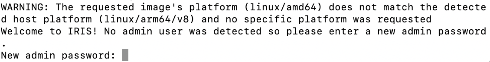
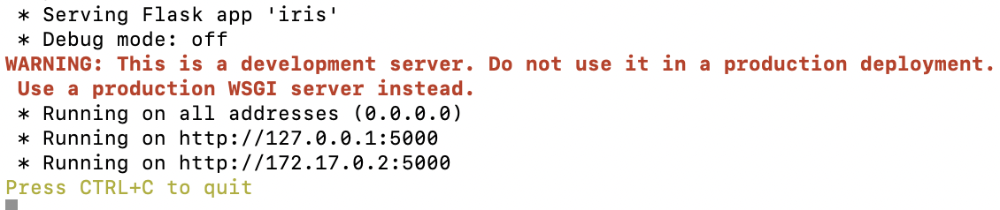
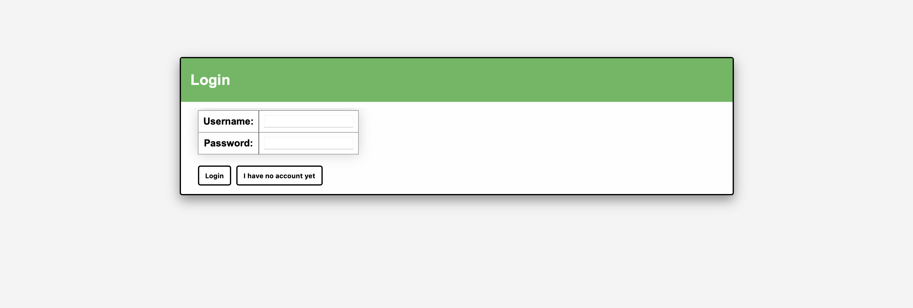
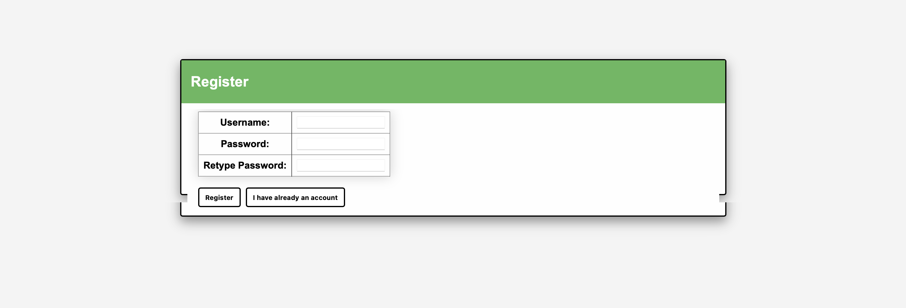
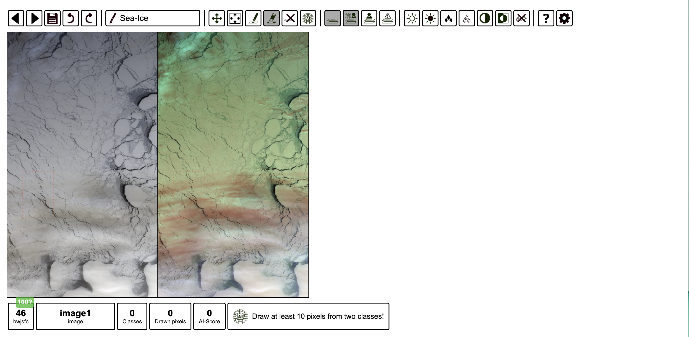

Introduction to Intelligently Reinforced Image Segmentation (IRIS)#
Throughout this project, we have extensively utilised IRIS, a user-friendly, web-based Flask application developed by ESA-PhiLab, with special thanks to Alistair Francis whose guidance has been instrumental. IRIS has been indispensable in our workflow, particularly in the efficient generation of ground-truth training data for our machine learning tasks. Its intuitive ‘click & train’ functionality has greatly simplified the process of creating accurate masks for Earth observation datasets, enhancing our capabilities in dataset creation. You can access the original repo at ESA-PhiLab/iris.
Installation: Why Docker?#
The direct installation of Iris from the GitHub repository can be complex and time-consuming, requiring manual installation of dependencies and configuration setup. By leveraging Docker, users can easily deploy and run Iris in a containerized environment, eliminating the need for manual dependency management and providing a consistent and reproducible execution environment. Docker simplifies the deployment process, enhances portability across different machines, and ensures consistent behaviour, making it an ideal solution for users looking for a streamlined and hassle-free way to access and use the Iris application.
Using Docker to Access Iris - Prerequisites#
Before pulling the Iris Docker image, please ensure that you have the following prerequisites in place:
Docker Installation: Docker needs to be installed on your machine. Docker provides platform-specific installers for Windows, macOS, and Linux. Follow the official Docker installation guide based on your operating system to install Docker Desktop or Docker Engine.
Docker Installation Guide: https://docs.docker.com/get-docker/
Docker Account (Optional): If you plan to use Docker Hub, you may create a Docker account at https://hub.docker.com/. A Docker account is not mandatory but can be useful for managing images and repositories.
Docker Hub: https://hub.docker.com/
Note: If you have an antivirus application like F-Secure running on your device, it may interfere with the Docker application. In such cases, you might encounter issues when trying to open Docker or run Docker commands. To resolve this, you can try temporarily disabling the antivirus application or adding Docker to the list of trusted applications in your antivirus settings.
Once you have completed these prerequisites, you can open Docker on your device and then proceed with pulling the Iris Docker image.
Pulling the Iris Docker Image#
To pull the Iris Docker image, follow these steps:
Open a terminal or command prompt on your machine.
Execute the following command to pull the Iris Docker image from Docker Hub:
docker pull totony4real/iris:1.0
Wait for the Docker image to be downloaded. The progress will be dis- played in the terminal or command prompt.
Once the Iris Docker image is successfully pulled, you are ready to run the Iris Docker container and access the Iris web interface.
A toy example for you to use as data and configuration can be accessed here. This dataset is from Sentinel-3 OLCI and corresponds to the following file:
S3A_OL_1_EFR____20180307T054004_20180307T054119_20180308T091959_0075_028_319_1620_LN1_O_NT_002.SEN3
Visualising the Geo-Location of the Dataset#
A visualisation of the dataset’s geographical location is shown below. You can interact with the map (e.g., zoom in/out, pan) to explore the area of interest.
This map is generated using the cell below:import folium
import json
def plot_results_from_footprints(geofootprints):
"""
Generate a Folium map from a list of geo footprints and names.
Args:
geofootprints (list of dict): A list where each dict contains:
- "GeoFootprint": GeoJSON string representing the footprint.
- "Name": A string representing the name of the footprint.
Returns:
folium.Map: A Folium map with the geo footprints added.
"""
m = folium.Map(location=[0, 0], zoom_start=2)
for idx, entry in enumerate(geofootprints):
try:
geojson1 = json.loads(entry["GeoFootprint"]) # Parse GeoJSON
folium.GeoJson(geojson1, name=entry["Name"]).add_to(m)
except json.JSONDecodeError as e:
print(f"Error decoding JSON for entry {idx}: {e}")
folium.LayerControl().add_to(m)
return m
# Example input: List of footprints and names
geofootprints = [
{
"Name": "S3A_OL_1_EFR____20180307T054004",
"GeoFootprint": """
{"type": "Polygon", "coordinates": [[[62.8229, 73.546], [65.0001, 73.5137], [67.1696, 73.4598],
[69.3311, 73.3834], [71.4562, 73.2855], [73.5652, 73.1656], [75.6288, 73.0254], [77.6662, 72.8648],
[79.6691, 72.6827], [81.6259, 72.4816], [83.5468, 72.2642], [85.4064, 72.0266], [87.2264, 71.7733],
[88.9874, 71.5012], [90.7074, 71.2128], [92.3621, 70.9086], [93.9801, 70.5923], [95.5412, 70.2614],
[97.0506, 69.9178], [98.515, 69.5596], [107.625, 73.0537], [106.068, 73.4784], [104.418, 73.8931],
[102.697, 74.2919], [100.878, 74.6768], [98.9889, 75.0482], [96.9979, 75.4018], [94.9093, 75.7395],
[92.7279, 76.054], [90.4438, 76.3521], [88.0671, 76.624], [85.6001, 76.8763], [83.037, 77.1047],
[80.3946, 77.3059], [77.6868, 77.4801], [74.8905, 77.6274], [72.0501, 77.745], [69.1422, 77.8334],
[66.2117, 77.8908], [63.2614, 77.9181], [62.8229, 73.546]]]}
"""
}
]
# Generate the map
map_result = plot_results_from_footprints(geofootprints)
# Save the map as an HTML file
map_result.save("map_visualization_class1_S33.html")
print("Map has been saved as 'map_visualization_class1_S3.html'")
Run IRIS with Docker#
For each task, we will provide you with the raw dataset (images) and the configuration file needed for setting up IRIS. After downloading the data and config files, run Iris using Docker with the following command:
docker run -p 80:5000 -v path_to_data:/dataset/ --rm -it totony4real/iris:1.0 label /dataset/config.json
Replace path_to_data with the actual path to the directory where you saved the downloaded files.
In the terminal, you will see the following appears after run the previous command: 
Here you need to set a password of your own.
After setting the password, you will see: 
Once the Docker container is running, access Iris by opening your web browser and navigating to http://localhost:80. Note: do not open the link provided in the terminal, use http://localhost:80 instead. For example, if the terminal asks you to open http://127.0.0.1:5000, you need to open http://127.0.0.1:80 instead. The Iris web interface should be accessible, and you can start using the application with the provided data and configuration.
Upon following the provided link, you’ll be greeted with the following interface: 
To get started, simply click the registration button, which will lead you to the screen shown below:  At this point, you can choose a username and password to your preference. Once you fill in these details, click the ‘Register’ button to complete the process. Subsequently, you’ll be redirected to the application, ready to begin your session.
How to Use IRIS?#
You can find some general steps and tips for using IRIS by following these steps:
Start with the Interface
At the beginning, you will see an interface like this:
Use the Pencil Tool
You can use the pencil tool to paint pixels anywhere within the rectangular region marked by red dotted lines. You can zoom in or out of the image by using the mouse scroll wheel or by using two fingers to swipe up or down on the touchpad. This allows you to adjust the image size according to your preference.Change the Cursor Size
To change the cursor size, you can hold the Shift key while using the mouse scroll wheel or swiping up or down with two fingers on the touchpad. This action will increase or decrease the size of the cursor, allowing you to adjust it to your desired size.Perform Classification
Once you have finished painting all the classes needed, IRIS is ready to perform classification and generate output masks.Show Drawn Pixels
You can use the “Show Drawn Pixels” button to display only the pixels that you have drawn. This allows you to see which parts have been classified and processed by IRIS.Save the Output Masks
To save the output masks generated by IRIS, you can click on the ‘Save’ button located at the top of the page. The output masks will be saved in the same folder that contains your data and config file. You can navigate to that folder on your device to locate the saved masks. You are also able to find the corresponding numpy arrays of the saved mask, which may be useful for further analysis.
Reuse of Mask#
As previously mentioned, IRIS is designed for generating ground-truth labels for machine learning datasets. Consequently, it is both practical and beneficial to reuse those saved masks for future tasks. Examples of this will be provided in subsequent chapters.
Exercise of the week#
Produce masks of sub-regions of an image provided using IRIS.
Guidelines#
Total Masks: You are required to create a total of three (3) masks.
Mask Coordinates:
For the first two masks, use the coordinates provided in the
config.jsonfile ([100, 700, 300, 1000]) and the additional set[100, 400, 300, 700].For the third mask, tackle a more challenging scenario with the partially clouded region specified by
[100, 1000, 300, 1300]. Remember to update these coordinates in theconfig.jsonfile accordingly.Each mask you create will correspond to samples 1, 2, and 3, respectively.
Uploading Masks:
Once your masks are ready, upload them to the submission folder.
Name your files using the following convention, replacing ‘studentnumber’ with your actual student number:
IRISmask_image2_sample1_studentnumberIRISmask_image2_sample2_studentnumberIRISmask_image2_sample3_studentnumber
Please ensure you adhere to the naming convention and upload instructions to facilitate a smooth review process.